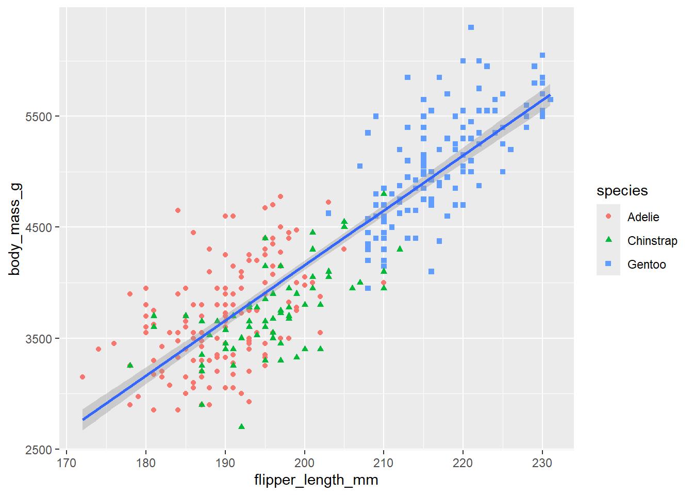

── Attaching core tidyverse packages ──────────────────────── tidyverse 2.0.0 ──
✔ dplyr 1.1.4 ✔ readr 2.1.5
✔ forcats 1.0.0 ✔ stringr 1.5.1
✔ ggplot2 3.5.1 ✔ tibble 3.2.1
✔ lubridate 1.9.3 ✔ tidyr 1.3.1
✔ purrr 1.0.2
── Conflicts ────────────────────────────────────────── tidyverse_conflicts() ──
✖ dplyr::filter() masks stats::filter()
✖ dplyr::lag() masks stats::lag()
ℹ Use the conflicted package (<http://conflicted.r-lib.org/>) to force all conflicts to become errors20 Creating a ggplot
20.1 Define a Plot Object
With ggplot2, you begin a plot with the function ggplot(), defining a plot object that you then add layers to.
The first argument of ggplot() is the dataset to use in the graph and so ggplot(data = penguins) creates an empty graph that is primed to display the penguins data, but since we haven’t told it how to visualize it yet, for now it’s empty (it’s like an empty canvas you’ll paint the remaining layers of your plot onto).
Example:
ggplot(data = penguins)
20.2 Map the data
Next, we need to tell ggplot() how the information from our data will be visually represented. The mapping argument of the ggplot() function defines how variables in your dataset are mapped to visual properties (aesthetics) of your plot.
The mapping argument is always defined in the aes() function, and the x and yarguments of aes() specify which variables to map to the x and y axes.
Example:
ggplot(
data = penguins,
mapping = aes(x = flipper_length_mm, y = body_mass_g)
)
Our empty canvas now has more structure – it’s clear where flipper lengths will be displayed (on the x-axis) and where body masses will be displayed (on the y-axis). But the penguins themselves are not yet on the plot. This is because we have not yet determine how to represent the observations from our dataframe on our plot.
20.3 Represent the data
To do so, we need to define a geom: the geometrical object that a plot uses to represent data. These geometric objects are made available in ggplot2 with functions that start with geom_.
For example, bar charts use geom_bar(), line charts use geom_line(), boxplots use geom_boxplot(), scatterplots use geom_point(), and so on.
Example:
ggplot(
data = penguins,
mapping = aes(x = flipper_length_mm, y = body_mass_g)
) +
geom_point()Warning: Removed 2 rows containing missing values or values outside the scale range
(`geom_point()`).
Note: One common problem when creating ggplot2 graphics is to put the + in the wrong place: it has to come at the end of the line, not the start.
You can rewrite the previous plot more concisely:
ggplot(penguins, aes(x = flipper_length_mm, y = body_mass_g)) +
geom_point()Warning: Removed 2 rows containing missing values or values outside the scale range
(`geom_point()`).
Or using the pipe, |>:
penguins |>
ggplot(aes(x = flipper_length_mm, y = body_mass_g)) +
geom_point()Warning: Removed 2 rows containing missing values or values outside the scale range
(`geom_point()`).
Now we have something that looks like what we might think of as a “scatterplot”.
20.4 Add Aesthetics and Layers
You will we need to modify the aesthetic mapping, inside of aes().
Example:
ggplot(
data = penguins,
mapping = aes(x = flipper_length_mm, y = body_mass_g, color = species)
) +
geom_point()Warning: Removed 2 rows containing missing values or values outside the scale range
(`geom_point()`).
When a categorical variable is mapped to an aesthetic, ggplot2 will automatically assign a unique value of the aesthetic (here a unique color) to each unique level of the variable (each of the three species), a process known as scaling. ggplot2 will also add a legend that explains which values correspond to which levels.
Now let’s add one more layer: a smooth curve displaying the relationship between body mass and flipper length. Since this is a new geometric object representing our data, we will add a new geom as a layer on top of our point geom: geom_smooth(). And we will specify that we want to draw the line of best fit based on a linear model with method = "lm".
Example:
ggplot(
data = penguins,
mapping = aes(x = flipper_length_mm, y = body_mass_g, color = species)
) +
geom_point() +
geom_smooth(method = "lm")`geom_smooth()` using formula = 'y ~ x'Warning: Removed 2 rows containing non-finite outside the scale range
(`stat_smooth()`).Warning: Removed 2 rows containing missing values or values outside the scale range
(`geom_point()`).
Note that When aesthetic mappings are defined in ggplot(), at the global level, they’re passed down to each of the subsequent geom layers of the plot. However, each geom function in ggplot2 can also take a mapping argument, which allows for aesthetic mappings at the local level that are added to those inherited from the global level. Since we want points to be colored based on species but don’t want the lines to be separated out for them, we should specify color = species for geom_point() only.
Example:
ggplot(
data = penguins,
mapping = aes(x = flipper_length_mm, y = body_mass_g)
) +
geom_point(mapping = aes(color = species)) +
geom_smooth(method = "lm")`geom_smooth()` using formula = 'y ~ x'Warning: Removed 2 rows containing non-finite outside the scale range
(`stat_smooth()`).Warning: Removed 2 rows containing missing values or values outside the scale range
(`geom_point()`).
It’s generally not a good idea to represent information using only colors on a plot, as people perceive colors differently due to color blindness or other color vision differences. Therefore, in addition to color, we can also map species to the shape aesthetic.
Example:
ggplot(
data = penguins,
mapping = aes(x = flipper_length_mm, y = body_mass_g)
) +
geom_point(mapping = aes(color = species, shape = species)) +
geom_smooth(method = "lm")`geom_smooth()` using formula = 'y ~ x'Warning: Removed 2 rows containing non-finite outside the scale range
(`stat_smooth()`).Warning: Removed 2 rows containing missing values or values outside the scale range
(`geom_point()`).
20.5 Improve Labels
And finally, we can improve the labels of our plot using the labs() function in a new layer:
title, adds a title.subtitle, adds a subtitle to the plot.x, is the x-axis label.y, is the y-axis label.colorandshapedefine the label for the legend.
In addition, we can improve the color palette to be colorblind safe with the scale_color_colorblind() function from the ggthemes package.
Example:
ggplot(
data = penguins,
mapping = aes(x = flipper_length_mm, y = body_mass_g)
) +
geom_point(aes(color = species, shape = species)) +
geom_smooth(method = "lm") +
labs(
title = "Body mass and flipper length",
subtitle = "Dimensions for Adelie, Chinstrap, and Gentoo Penguins",
x = "Flipper length (mm)", y = "Body mass (g)",
color = "Species", shape = "Species"
) +
scale_color_colorblind()`geom_smooth()` using formula = 'y ~ x'Warning: Removed 2 rows containing non-finite outside the scale range
(`stat_smooth()`).Warning: Removed 2 rows containing missing values or values outside the scale range
(`geom_point()`).
20.6 Save Your Plot
Once you’ve made a plot, you might want to get it out of R by saving it as an image that you can use elsewhere. That’s the job of ggsave(), which will save the plot most recently created to disk:
ggplot(penguins, aes(x = flipper_length_mm, y = body_mass_g)) +
geom_point()Warning: Removed 2 rows containing missing values or values outside the scale range
(`geom_point()`).
ggsave(filename = "penguin-plot.png")Saving 7 x 5 in imageWarning: Removed 2 rows containing missing values or values outside the scale range
(`geom_point()`).This will save your plot to your working directory.